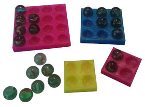
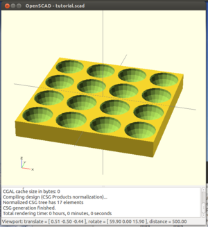
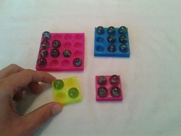
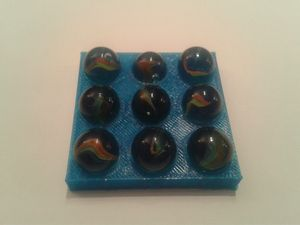
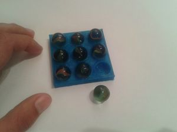

| Youmagine | Github | Fabfabbers |
|---|


(click para ampliar)
Contenido
[ocultar]Introducción
Organizador de canicas paramétrico. El usuario puede cambiar el tamaño del array de canicas que quiere colocar, así como el diámetro de las canicas, la distancia entre canicas y la altura de la caja.
Este objeto es el que se ha hecho de ejemplo en el Tutorial 5 de Diseño de piezas con OpenScad II. Acceso directo al video-tutorial
Descarga
| marble-organizer.scad | Fichero fuente (en OpenScad) |
| marble-organizer-4x4.stl | Fichero STL. Versión de 4x4 canicas |
| marble-organizer-3x3.stl | Fichero STL. Versión de 3x3 canicas |
| marble-organizer-2x2.stl | Fichero STL. Versión de 2x2 canicas |
Fotos
| Álbum de fotos |
|---|
|  (click para ampliar) |
 (click para ampliar) |
|  (click para ampliar) |
 (click para ampliar) |


Repositorio
Autor
Licencia
| |
Enlaces
- Tutorial: Diseño de piezas con OpenScad II
Noticias
- 05/Enero/2014: Primera versión publicada
- 04/Enero/2014: Comenzada esta página